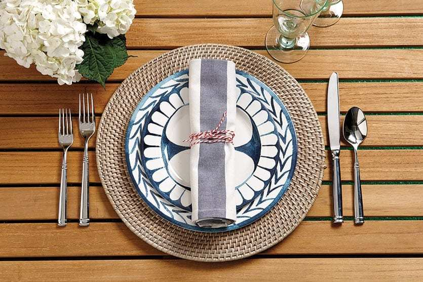
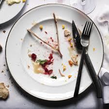
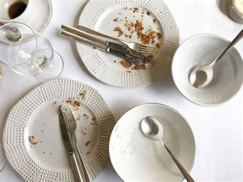
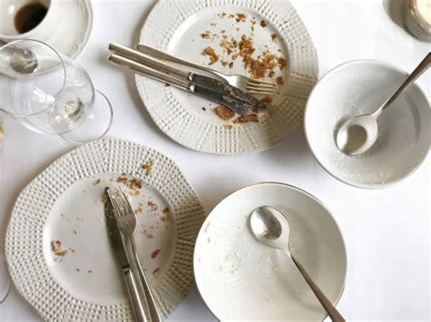
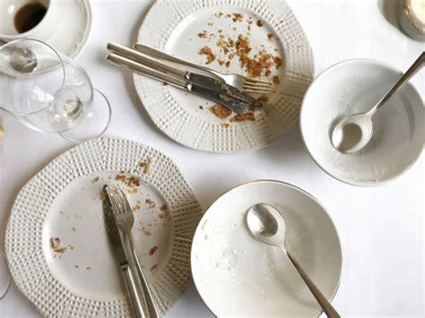
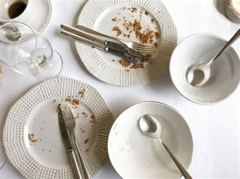

 


Train:
Candidates: 0, 1, 2, 3

Intended concept: Neatly arranged place settings (complete with cutlery and wine glasses).
Solution provided by tool:
The chosen answer is 0.
The discriminator is: Exists q0: knife!0. Forall q1: diningtable!1. Exists q2: fork!2. And(left!2!0 placed_on!2!1)